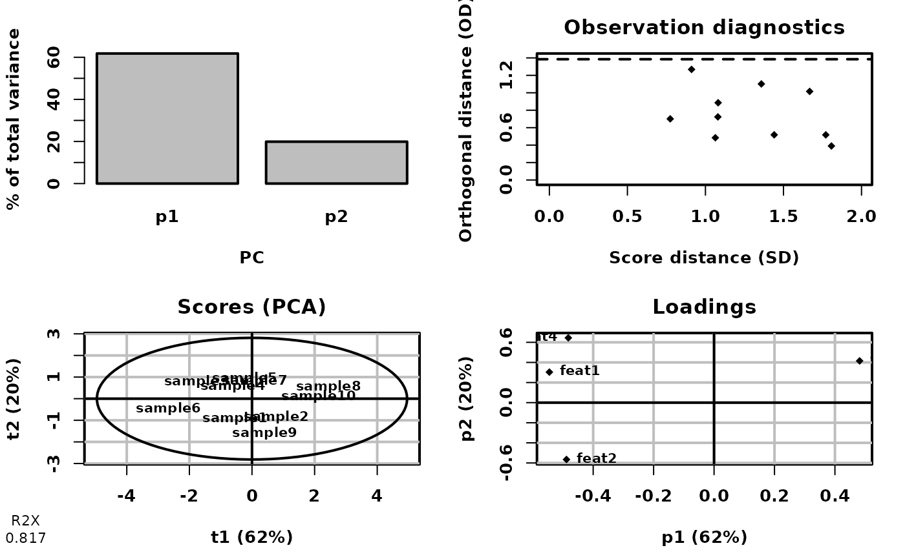
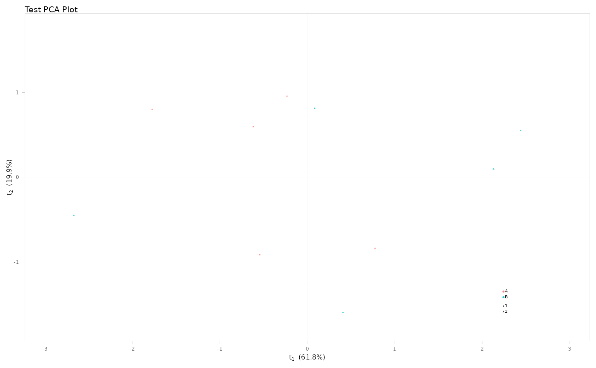

Performs PCA, PLS, or OPLS using ropls and generates a formatted scores plot based on the first two components.
Usage
mva(
X,
sample_data,
group_colour = NULL,
group_shape = NULL,
plot_title = NULL,
verbose = TRUE,
...
)Arguments
- X
A numeric matrix or data frame of features (e.g., metabolites, genes), with samples as rows and features as columns.
- sample_data
A
data.framecontaining sample-level data. Row names must match the sample identifiers inXand must be also in a column named"sample_id".- group_colour
Optional. Character colname in
sample_dataused for point color mapping.- group_shape
Optional. Character colname in
sample_dataused for point shape mapping.- plot_title
Optional. Character string specifying the plot title.
- verbose
Logical. If
TRUE, displays progress messages.- ...
Additional arguments passed to
ropls::opls()(e.g.predI =,orthoI =).
Value
A named list with two elements:
- ropls_obj
The
ropls::opls()object.- scores_plot
A
ggplot2::ggplot()object showing the scores plot.
Details
The analysis type depends on the ... arguments passed to ropls::opls().
See also
ropls::opls() for details on the ropls::opls() output.
Examples
# PCA
if (requireNamespace("ropls", quietly = TRUE)) {
set.seed(123)
mock_X <- matrix(rnorm(40),
nrow = 10,
dimnames = list(paste0("sample", 1:10),
paste0("feat", 1:4))
)
sample_data <- data.frame(
sample_id = rownames(mock_X),
group = factor(rep(c("A", "B"), each = 5)),
batch = factor(rep(1:2, times = 5)),
row.names = rownames(mock_X),
stringsAsFactors = FALSE
)
result <- mva(
X = mock_X,
sample_data = sample_data,
group_colour = "group",
group_shape = "batch",
plot_title = "Test PCA Plot",
predI = 2, # PCA: set components
verbose = FALSE
)
# PCA plot
result$scores_plot
}
#> PCA
#> 10 samples x 4 variables
#> standard scaling of predictors
#> R2X(cum) pre ort
#> Total 0.817 2 0

